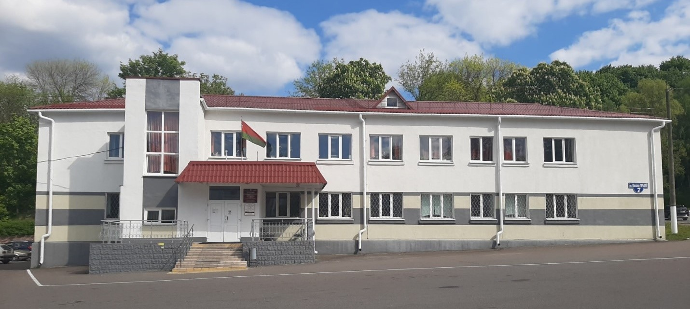

Главная
Территориальный центр является государственным учреждением социального обслуживания, деятельность которого направлена на организацию комплексного социального обслуживания граждан (семей), находящихся в трудной жизненной ситуации.

Центр подчиняется управлению по труду, занятости и социальной защите Мозырского районного исполнительного комитета, который является органом государственного управления.
Директор учреждения «Территориальный центр социального обслуживания населения Мозырского района» - НЕРЕД ЕЛЕНА ГРИГОРЬЕВНА
ПРИЁМ ГРАЖДАН ПО ЛИЧНЫМ ВОПРОСАМ ПРОВОДИТСЯ КАЖДУЮ СРЕДУ МЕСЯЦА С 8.00 ДО 13.00, КАБ. №30, ТЕЛ. 22-52-70
Заместитель директора учреждения «Территориальный центр социального обслуживания населения Мозырского района» - ГРИШКОВЕЦ АЛЛА НИКОЛАЕВНА
ПРИЁМ ГРАЖДАН ПО ЛИЧНЫМ ВОПРОСАМ ПРОВОДИТСЯ КАЖДЫЙ ПОНЕДЕЛЬНИК МЕСЯЦА С 8.00 ДО 13.00, КАБ. №35, ТЕЛ. 22-52-39
Предварительная запись граждан на приём к директору, заместителю директора учреждения производится в кабинете №29 или по телефону 22-52-23. Ответственный – делопроизводитель Андык Елена Валентиновна.
В СЛУЧАЕ ВРЕМЕННОГО ОТСУТСТВИЯ ОТВЕТСТВЕННЫХ ЛИЦ, В УСТАНОВЛЕННЫЕ ДНИ ЛИЧНЫЙ ПРИЕМ ПРОВОДЯТ ЛИЦА, ИСПОЛНЯЮЩИЕ ИХ ОБЯЗАННОСТИ.
Адрес: 247760
Гомельская обл.,
г. Мозырь,
пл. М. Горького, д. 7
тел./факс: 22-52-23, 22-52-63
tcsonmr@mail.gomel.by — только для деловой переписки
Режим работы:
- Понедельник — Пятница: 8:30 – 17:30
- Перерыв на обед: 13:00 – 14:00
- Суббота, Воскресенье — выходные
Для приема заинтересованных лиц с заявлениями об осуществлении административных процедур дополнительно организовано дежурство специалистов:
ежедневно в рабочие дни с 8.00 до 8.30, среда с 17.30 до 20.00
в выходные дни: суббота: с 8.30 до 17.30 (тел.22-52-21 или 22-52-10)
Перерыв на обед: с 13.00 до 14.00
По телефону 22-52-26 ежедневно (понедельник -пятница, кроме праздничных дней, объявленных Президентом Республики Беларусь нерабочими) с 9.00 до 13.00 действует горячая линия справочно-информационного характера.
Оказание экстренной психологической помощи осуществляется по «телефону доверия» - 22-52-38 (понедельник-пятница с 8.30 до 17.30, перерыв на обед с 13.00 до 14.00, кроме праздничных дней, объявленных Президентом Республики Беларусь нерабочими).
Для оперативного решения вопросов в Центре используется заявительный принцип «Одно окно».
Заявки на оказание ситуативной помощи людям с инвалидностью принимаются по телефону 24-69-40 (понедельник-пятница с 8.30 до 17.30, перерыв на обед с 13.00 до 14.00, кроме праздничных дней, объявленных Президентом Республики Беларусь нерабочими).
Территориальный центр является государственным учреждением социального обслуживания, деятельность которого направлена на организацию комплексного социального обслуживания граждан (семей), находящихся в трудной жизненной ситуации.
Центр подчиняется управлению по труду, занятости и социальной защите Мозырского районного исполнительного комитета, который является органом государственного управления.
Действия специалистов центра могут быть обжалованы в вышестоящей организации –
УПРАВЛЕНИЕ ПО ТРУДУ, ЗАНЯТОСТИ И СОЦИАЛЬНОЙ ЗАЩИТЕ МОЗЫРСКОГО РАЙИСПОЛКОМА
Адрес: г. Мозырь, ул. Советская, д. 160, тел. 24-63-10
Режим работы: с 8.30 до 17.30, перерыв на обед с 13.00 до 14.00
Выходной день: суббота, воскресенье
По вопросу профилактики насилия в семье и временного приюта в «кризисной» комнате необходимо обращаться в учреждение «Территориальный центр социального обслуживания населения Мозырского района» по адресу: г. Мозырь, пл. Горького, д.7 тел.8 (0236) 22 52 38, 22 35 00 (понедельник-пятница с 8.30 до 17.30, перерыв на обед с 13.00 до 14.00, кроме праздничных дней, объявленных Президентом Республики Беларусь нерабочими), 8029-853-76-00 (круглосуточно).
КНИГА ПАМЯТИ: https://mintrud.gov.by/ru/kniga-pamyati-ru
СОЦИАЛЬНАЯ ВИДЕОРЕКЛАМА: https://disk.yandex.by/d/H8_6TUtAe5dzsw
ИНФОРМАЦИОННЫЕ МАТЕРИАЛЫ ПО ЭТИКЕ ОБЩЕНИЯ С НЕЗРЯЧИМИ: https://gomel.beltiz.by/2023/03/10/14062
БРОШЮРЫ НА ЯСНОМ ЯЗЫКЕ: https://cloud.mail.ru/public/CGtD/DrgzZqtj1
КУРС ПО ПРОФИЛАКТИКЕ ДЕМЕНЦИИ (видеоуроки): https://www.mintrud.gov.by/ru/kurs-profilaktike-demencii-ru
ОБУЧЕНИЕ ЖЕСТОВОМУ ЯЗЫКУ (видеоролики): https://www.youtube.com/@arkmedia-spb
ПРАВИЛА ЭТИКЕТА ПРИ ОБЩЕНИИ С ЛЮДЬМИ С ИНВАЛИДНОСТЬЮ: https://www.youtube.com/watch?v=SoStiHBEsHU
Закон: Закон о социальном обслуживании
В структуру ТЦСОН входит 6 отделений по различным направлениям деятельности:
- Отделение первичного приема и оценка нуждаемости в социальной поддержке (г. Мозырь, пл. Горького, 7);
- Отделение социальной поддержки населения и осуществления функций по опеке и попечительству (г. Мозырь, пл. Горького, 7);
- Отделение комплексной поддержки в кризисной ситуации и активного долголетия в условиях дневного пребывания (г. Мозырь, пл. Горького, 7);
- Отделение социальной помощи на дому (г. Мозырь, пл. Горького, 7).
- Отделение социальной реабилитации, абилитации инвалидов (Мозырский район, аг. Козенки, ул. Спортивная, д. 51а).
- Отделение круглосуточного пребывания граждан пожилого возраста и инвалидов (Мозырский район, аг. Мелешковичи, ул. Пролетарская, д. 67а).
Вы можете оценить качество оказанных социальных услуг нашего учреждения, оставив свой отклик на Портале рейтинговой оценки качества оказания услуг организациями Республики Беларусь по ссылке: http://качество-услуг.бел/